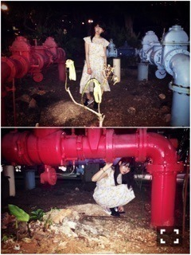
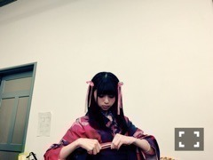
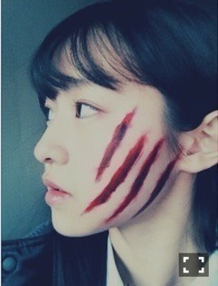

| 2016/03 14 Mon | 青ザリガニ。702回目 |
MV集特典イベント
お茶会 似顔絵会 録音会しました！
当選した方おめでとうございました！
1日でひとりひとり長くお話しできました〜
はじめましての方も多く、
本当に嬉しかったです。
良い思い出になったかなあ？
グアムでヒット祈願
第一回戦で勝ち、バカンス組でした。
来週以降は、、(´・_・｀)

ロケ以外の自由時間は
散歩したりゆっくりしました。

現地でスイムウェア購入して
朝早起きしてプール入ったりした。
朝プール＼(^o^)／

シーウォーカー体験しました。
バナナボートも乗った！
乃木のの聴きましたかあ！
飛鳥とふたりしゃべり楽しかったよ〜
あしゅまり永久不滅仲仔ニコイチ＼(^o^)／
今年は黒以外の服も着てね＼(^o^)／
遥かなるブータンよろしくね。

柳沢翔監督と対談しました！
映画「星ガ丘ワンダーランド」のこと
1st個人PV「ナイフ」のこと
まともに対面したのは5年ぶりでした！
またお会いできたこと嬉しく思います。
5年前の作品を掘り起こして
対談まで繋がるとは。
ナイフは自分にとって
初めての個人PVで初めての演技でした。
ピリピリした空間、絵の具の匂い、
傷をアップで描いてるシーンで
居眠りしてしまったこと、
クッキー作ったのに
結局最後まで渡せなかったこと、
初期の中でもあの時の撮影は
今でも記憶に鮮明です。
きっとはじめての衝撃と興奮でした。
こういうことしたかった、
という、あれです。
おすすめの本や映画、服とか
これからもたくさん教えてください。
柳沢さんのつくる映像、
これからもずっと観ていたいし、
いちばん応援してます。
柳沢翔監督、初の長編映画
『星ガ丘ワンダーランド』上映中！！

まりか
コメント(378)
2016/03/14 19:30